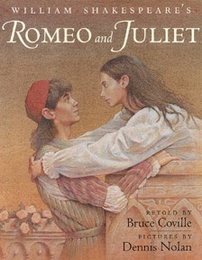

LEAR.
Roman tragik karya William Shakespeare.

Tentang Karya
King Lear” merupakan salah satu drama Inggris karya William Shakespeare yang dijadikan objek penelitian ini. Bahasa yang digunakan dalam drama “King Lear” sederhana dan mudah dimengerti oleh kita. Dengan membaca drama “King Lear”, kita bisa belajar bagaimana memahami cinta, bagaimana mencintai dan dicintai, dan bagaimana menyadari nilai kesetiaan.
Sinopsis Karya
Tema drama “King Lear” adalah perselingkuhan dan konspirasi Jenis-jenis cinta yang terkandung dalam drama “King Lear”, yaitu cinta sejati, cinta palsu (cinta yang penuh dengan kebohongan), cinta seorang ayah, cinta berdasarkan perjanjian, cinta setia, mencintai diri sendiri. Ketika pembunuhan kelompok mencapai orang-orang terakhir, Caesar melihat bahwa bahkan teman lamanya Brutus telah mengkhianatinya. Dia mengucapkan kalimat terkenal "Et tu, Brute?" Kemudian menambahkan "Kalau begitu jatuh, Caesar," menunjukkan bahwa pengkhianatan Brutus tidak lagi memberinya keinginan untuk mencintai.
Dari ketiga puteri anak King Lear (Goneril, Regan, dan Cordelia), hanya putri Cordelia yang mempunyai cinta sejati kepada ayahnya. Cordelia memperlihatkan cintanya kepada ayahnya dengan tingkah laku dan perbuatan. Sedangkan kedua kakaknya, Goneril dan Regan memperlihatkan kata-kata cintanya dengan baik, tetapi tidak dapat dibuktikan dengan tingkah laku. Ketika Brutus tidur malam itu, hantu Kaisar datang kepadanya dalam mimpi dan memperingatkan dia akan kekalahan yang akan datang, kemunculannya memberi tahu Brutus "kamu akan melihatku di Filipi." Saat konspirator bersiap untuk bertempur, Cassius dan Brutus tahu mereka berdua akan mati. Mereka tersenyum dan saling menunjukkan kebaikan terakhir sebelum kematian mereka.
Apa yang mereka ucapkan dengan cinta tidak sesuai dengan apa yang ada dalam hatinya. Cinta mereka penuh dengan kebohongan sebagai kedok supaya ayahnya senang. Namun pada akhirnya, Goneril dan Regan menemui ajalnya secara tragis Pengaruh terhadap orang sekitar, Kent sebagai penasehat King Lear telah mengabdi pada atasannya dengan membuktikan cintanya tanpa pamrih, namun ia diancam akan dibunuh bila masih ada di hadapan rajanya. Sebagai tanda cintanya, ia menyamar dengan mengganti identitasnya menjadi abdi raja. Ia rela mati menyusul King Lear demi cintanya kepada Tuannya.
Photos



Contact Us
Bogor, INA
Phone: +62 151515
Email: williamshakespeare@mail.com
Lets get in touch. Send us a message: